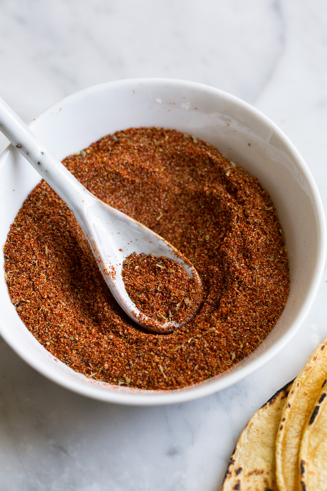

Original Taco Seasoning

Description:
Most taco seasoning mixes contain salt, warming spices (such as paprika, oregano, and chili), onion powder, and garlic powder. This top-rated recipe is made with chili powder, ground cumin, dried oregano, sea salt, black pepper, ground paprika, garlic powder, onion powder, and crushed red pepper flakes.
Ingredients:
- 1 tablespoon chili powder
- 1 1/2 teaspoons ground cumin
- 1 teaspoon sea salt
- 1 teaspoon ground black pepper
- 1/2 teaspoon ground paprika
- 1/4 teaspoon garlic powder
- 1/4 teaspoon onion powder
- 1/4 teaspoon crushed red pepper flakes
- 1/4 teaspoon dried oregano
Steps:
- Mix together chili powder, cumin, salt, pepper, paprika, garlic powder, onion powder, red pepper flakes, and oregano in a small bowl.
- Use 3 tablespoons of homemade taco seasoning for every packet your recipe calls for.
Return to list of recipes.